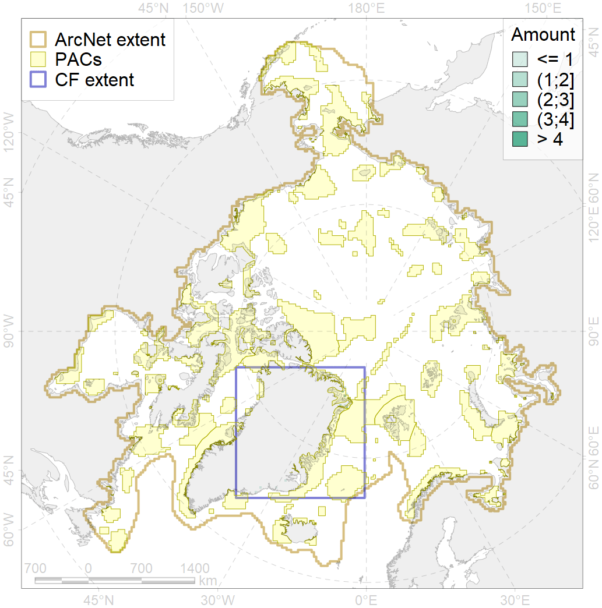
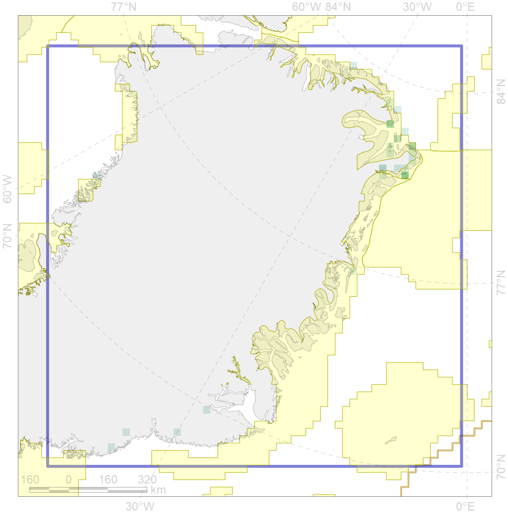

6036

| CF code | 6036 |
| CF name | Ivory gull (Pagophila_eburnea) East Greenland breeding colonies |
| Time Period | 1990-2016 |
| Source(s) | Gilg et al 2009 |
| Seasonality | April-September |
| Depth Horizon | 0 m |
| Methodology | Field Data |
| Use Restrictions | Open source |
| Author Name | Gavrilo, Tertitski |
| Notes | |
| Scenario’s Target | 0.648 |
| Target Achievement | 0.760 (Scenario: 117.2%) |
| PAC | Share of the Total Amount within the PAC | Share of the Target Achievement for the ArcNet | PAC’s Contribution to the Target Achievement |
|---|---|---|---|
| 32 | 6.6%19.4% | 10.2%29.9% | 8.7%25.5% |
| 33 | 51.2%71.0% | 79.1%109.5% | 67.5%93.4% |
| inner | 57.9%90.3% | 89.3%139.4% | 76.2%118.9% |
| outer | 42.1%80.6% | 27.9%87.4% | 23.8%74.5% |
| † supplement values are for area consistence whereas principal values are for Accenter compatible gridded stats |